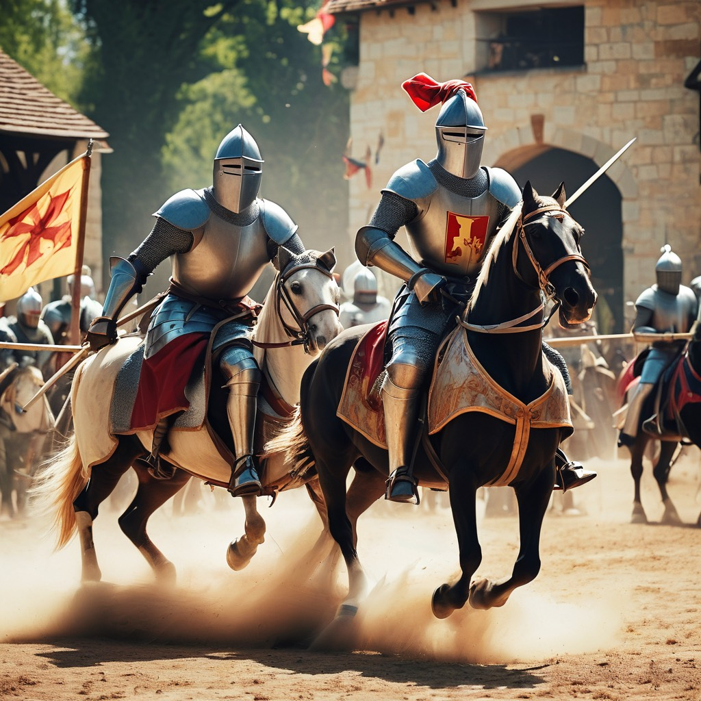

The Black Knight
In the kingdom of Eldoria, there lived a skilled and valiant knight known as Sir Galen. other knights, Sir Galen had a secret. He concealed his true identity beneath a Padorned with an intricate silver crest. No one knew who he was or where he came from, but his reputation as a formidable warrior spread far and wide. Sir Galen possessed exceptional combat skills and a chivalrous heart. He roamed the land, seeking justice for the oppressed and defending the weak. His every move was swift and precise, his swordplay unmatched. But it wasn't just his prowess in battle that caught people's attention—it was the air of mystery that surrounded him. As Sir Galen traveled from village to village, tales of his heroic deeds spread like wildfire. The people marveled at his strength and skill, and whispers of his hidden identity filled the air. Some believed he was a fallen prince seeking redemption, while others thought he was a nobleman turned vigilante. Wherever Sir Galen went, he left a trail of admiration and curiosity in his wake. People flocked to witness his daring feats and listen to the stories of his valor. The mysterious knight became a symbol of hope and inspiration, a beacon of light in a world filled with darkness. But even as his legend grew, Sir Galen remained humble and focused on his mission. He never revealed his true face or spoke of his past. Instead, he channeled his energy into protecting the innocent and upholding justice. His identity may have been hidden, but his actions spoke louder than words. One day, news reached Sir Galen of a fearsome dragon terrorizing a nearby village. Determined to save the villagers from the creature's wrath, he rode to their aid. The dragon was a formidable opponent, breathing fire and unleashing its fury upon the land. But Sir Galen faced the beast head-on, his sword gleaming in the sunlight. The battle was fierce, and the villagers watched in awe as the mysterious knight fought with unmatched skill and bravery. With each swing of his sword, he drew closer to victory. Finally, after a grueling struggle, Sir Galen landed a decisive blow, slaying the dragon and saving the village from destruction.

The Black Knight
Adventure · 1 year ago